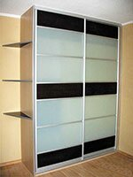
01
Шкафы‑купе
Корпусные, встроенные, угловые
Студия мебели «Софья» · Казань
С 2007 года производим встроенную и корпусную мебель по индивидуальным проектам: кухни, шкафы‑купе, гардеробные и прихожие.
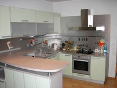
Студия мебели «Софья»
Производим встроенную и корпусную мебель по индивидуальным проектам. Дизайнер-замерщик приезжает с образцами материалов, составляет проект и рассчитывает стоимость на месте.
Каталог
Реальные работы студии. Каждый проект создаётся под конкретное помещение и задачи семьи.

Корпусные, встроенные, угловые
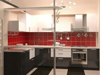
Гарнитуры по индивидуальному проекту
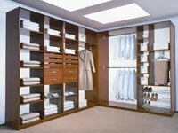
По индивидуальному проекту
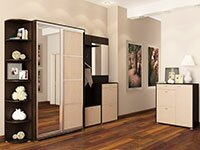
По индивидуальному проекту
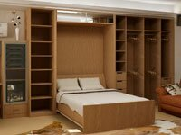
Корпусная мебель на заказ
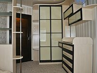
Межкомнатные перегородки

Мебель на заказ
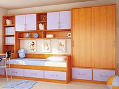
Мебель на заказ
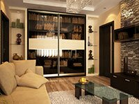
Мебель на заказ
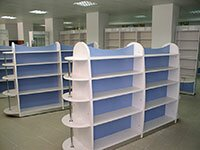
Мебель на заказ
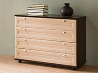
Мебель на заказ
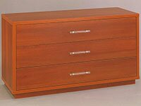
Мебель на заказ
В архиве сайта доступны только уменьшенные версии фотографий; для увеличения откройте изображение. Модели, цены и размеры на оригинальном сайте не указаны.
Реализованные работы
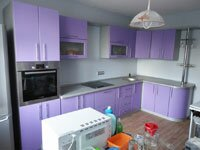
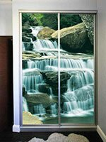
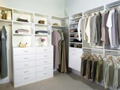
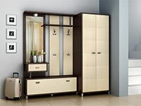
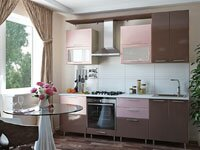
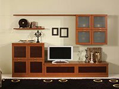
Нажмите на фотографию, чтобы рассмотреть её крупнее
Как мы работаем
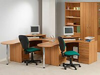
О компании
Студия мебели «Софья» производит корпусную мебель в Казани с 2007 года. Мы обновляем производство, работаем с качественными материалами и фурнитурой, чтобы мебель была удобной и долговечной.
Узнать больше о студииАрхив предложений
Акция «скидка 15%» действовала до 1 октября 2018 года и завершена. Мы сохранили её только как часть истории сайта — актуальные предложения уточняйте у студии.
Начните с разговора